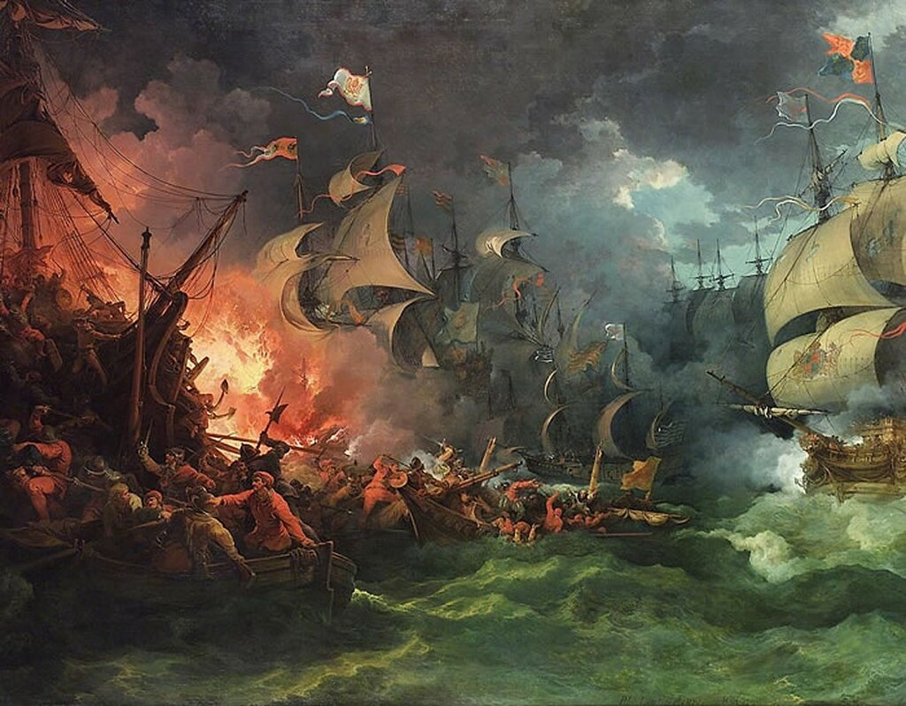
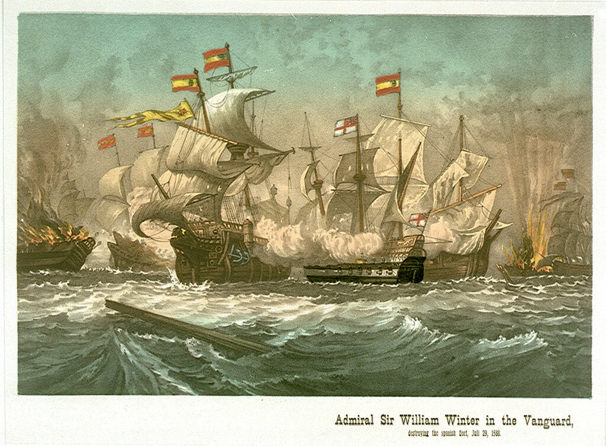

Прежде чем продолжить чтение Дневника солдата – небольшое предисловие.
Потеря якорной стоянки и лучших якорей на каждом испанском корабле в результате атаки брандеров вверила судьбу Армады Всевышнему. Вероятность встречи ее с силами герцога Пармского становилась исчезающе мала. Корабли оказались рассеяными в ночи в самых опасных прибрежных водах Европы. Лишь пять галеонов (флагман Сан Мартин с герцогом Медина-Сидония на борту, вице-флагман Сан Хуан де Португал с доном Рекальде, а также Сан Маркос, Сан Хуан Батиста и Сан Матео, смогли стать на запасные якоря в миле к северу от прежнего места.
На рассвете 8 августа английский флот выдвинулся для окружения этих кораблей. Медина-Сидония выстрелами из орудий флагмана дал сигнал флоту перегруппироваться и занять свои места в боевом ордере. Этот маневр занял некоторое время, в течение которого пять упомянутых галеонов подвергались интенсивному обстрелу с кораблей английского флота. Обстрел перерос в широкие боевые действия между враждебными флотами, которые продолжались на протяжении всего дня, став самыми ожесточенными за всю кампанию Непобедимой армады. Они получили название Сражение при Гравелине.

Разгром Непобедимой Армады 8 August 1588, картина Филипа Джеймса де Лутербура (Philip James de Loutherbourg, 1740–1812),. (1796) National Maritime Museum, Greenwich, Hospital Collection.
Выделим некоторые моменты этого сражения.
Время, необходимое испанцам для восстановления боевого порядка, во многом обеспечил экипаж галеаса Сан Лоренцо, который, как мы знаем, повредил руль в ночной суматохе, начавшейся после атаки брандеров, столкнувшись с другим галеасом Girona и затем врезавшись кормой в галеон Лейвы Rata Encoronada. Привод руля галеаса запутался в якорном канате Раты и его пришлось рубить. Галеас выбросился на отмель у Кале. Ввиду того, что это был флагманский корабль (capitana) эскадры галеасов, для захвата столь ценного приза Лорд верховный адмирал Говард лично повел всю свою эскадру.
Мелководье препятствовало сближению с галеасом, поэтому были спущены на воду одиннадцать корабельных баркасов с абордажной партией в сто человек, которые под командой легкого парусного пинаса и при поддержке дальнобойной корабельной артиллерии эскадры атаковали Сан Лоренцо. Ожесточенный бой продолжался около часа, пока командующий эскадрой галеасов Уго де Монкада не пал, сраженный мушкетной пулей в голову. Нужно признать, что вел он себя героически. Несмотря на то, что вся Армада покинула рейд Кале, а корпус галеаса лежал на песчаной банке таким образом, что орудия одного борта уткнулись в воду, а другого – смотрели в небо, он продолжал отражать атаки англичан, не прекращая попыток отремонтировать свой корабль. Когда ему последовало предложение отбуксировать галеас за деньги в нейтральный Кале, он отклонил его. После ожесточенной рукопашной схватки и гибели Уго, англичане смогли захватить Сан Лоренцо. Но тут вмешались французы, которые вспомнили, что прибрежная зона Кале – это их территориальные воды и стали угрожать уничтожением захваченного галеаса и всех, кто на нем находится, огнем своих береговых батарей, если англичане немедленно не отойдут.
Англичане отошли,забрав с собой все, что смогли унести, оставив ободранных корпус и орудия французам. Говард посчитал исход этого боя своей победой, поскольку еще один мощный корабль противника уже никогда не придет за войсками герцога Пармы. Впрочем, героическое сопротивление Уго де Монкады и его команды оказало несомненную помощь командованию Армады, дав те необходимые два часа для восстановления ее боевого ордера. Вновь возродился неприступный строй полумесяцем и в тылу основных сил испанского флота появились пусть и потрепанные, но достаточно надежные оборонительные линии. Упоминавшийся выше английский адмирал Уильям Уинтер так писал об этом:
Они развернулись в строй полумесяца… Их адмирал и вице-адмирал переместились в центр… На каждом фланге они поместили свои галеасы, португальские галеоны и другие мощные корабли, по шестнадцать единиц на каждом крыле…
Гравелинское сражение продолжалось девять часов и охватило акваторию от Гравелина до Остенде.
Как ни странно, но до нашего времени не дошло сколько-нибудь связного описания этого сражения.
Вот как описывает этот день Рекальде в Дневнике солдата:
На рассвете понедельника 8 августа весь вражеский флот открыл огонь по вице-флагману [галеону Сан Хуан под командованием Хуана Мартинеса де Рекальде - g.g.], как это уже имело место раньше, в то время как все другие корабли покинули нас. В итоге противник, заметивший, что ни флагманский корабль, ни другие корабли не вернулись, чтобы оказать нам помощь, обрушил на нас около тысячи ядер, в дополнение к огню из аркебуз и мушкетов, в то время как наш галеон выпустил по ним около трехсот ядер. Нам на помощь пришли галеоны Сан Матео и Сан Фелипе с доном Диего Пиментель (Maestres de Campo) и доном Франсиско де Толедо на борту, вместе с кораблем Бискайской эскадры Хуана Мартинеса де Рекальде. Они сделали свою работу так успешно, что противник вышел из боя; однако два упомянутых галеона увязли в схватке, так что вице-флагман повернул на обратный курс к ним. Увидев такой маневр, наш флагман и вся остальная Армада также начали поворот на обратный курс, таким образом мы выручили их. Два упомянутых галеона и нава Бискайской эскадры вновь оказались в окружении вражеских судов после того, как многочисленные ядра лишили их рангоута и такелажа, так что они не смогли поставить паруса. Но ни флагманский корабль ни любой из других из наших кораблей, хотя и видели в каком положении они оказались, не могли оказать им помощь. И когда адмирал захотел помочь им, герцог послал ему указание, что он должен удерживать прежний курс и не подвергать опасности свой корабль. Это (решение) позорит его и еще некоторых лиц. Когда стемнело, стало уже невозможно понять, что произошло с галеонами. Лишь в девять часов мы прошли мимо бискайского корабля, который, как упоминалось выше, сражался борт о борт с двумя галеонами. Мы услышали крики о том, что их корабль почти полностью затоплен. Удалось спастись почти всей команде, за исключением нескольких больных и раненых, которые и кричали о помощи. Утром этого дня мы видели, как флагманский галеас двигался по направлению к Кале и что несколько вражеских кораблей преследовали его. Мы также наблюдали бешеный обстрел галеаса, который отвечал взаимностью, одновременно переправляя на берег столько человек, сколько мог, и приближаясь к орудиям береговой крепости Кале. Мы видели, что крепость оказала поддержку галеасу, открыв интенсивный огонь.
Примечание 20. В Дневнике солдата не упоминается название «бискайского корабля» («nao vizcayna»), но, очевидно, речь идет о нао María Juan (капитан Педро де Угарте, 665 тонн, 24 орудия), который затонуло вскоре после этого. Повреждения San Mateo и San Felipe были настолько серьезными, что они беспомощно отдрейфовали к фламандскому побережью, где и разрушились на отмелях. Такие серьезные повреждения могут объясняться невиданным до этого времени сближением кораблей во время боя. Адмирал Уильям Уинтер, описывая впоследствии это сражение, заметил, что во время артиллерийского залпа с его галеона Vanguard можно было получить пулю из аркебузы противника, разобрать команды и крики на его кораблях.

Английский галеон Vanguard ведет бой против кораблей Непобедимой армады. National Maritime Museum, Greenwich, Лондон
Примечание 21. Для испанцев было важным сохранить строй и удержать позиции в районе портов, назначенных для погрузки армии герцога Пармы, в то время как англичане пытались отсечь от Армады по одному наветренные корабли и предоставили ветру сделать за них остальную работу – снести испанцев на отмель. Именно ветер, который на протяжении дня постоянно менялся от юго-юго-западного до северо-западного, был самым важным союзником англичан. К концу дня волнение усилилось, пошел дождь и видимость упала.
Лорд-адмирал, как мы уже видели, на рассвете повел свою эскадру на захват аварийного испанского галеаса, а остальные эскадры английского флота под общим командованием Франсиса Дрейка направил против пяти испанских галеонов, вернувщихся на якорную стоянку на рейде Кале. Дрейк свой Revenge повел на сближение с испанским флагманом San Martin. Сблизившись на дистанцию выстрела, корабли не спешили открывать огонь. Приходилось думать об экономии боеприпасов. И лишь когда расстояние сократилось до половины длины мушкетного выстрела (около ста метров), Ривендж произвел первый выстрел из носового орудия, после чего разрядил в противника все пушки одного борта. Сан Мартин ответил, пробив корпус английского галеона в нескольких местах. В это время на помощь Дрейку подошел Nonpareil под командованием Томаса Феннера, затем подоспели все остальные корабли его эскадры, каждый из который произвел бортовой залп по испанскому флагману.
Корпуса испанских галеонов в районе ватерлинии имели усиленный пояс обшивки из испанского дуба, поэтому ядра противника не могли его разрушить полностью, хотя и оставляли отверстия. Это приводило к появлению течи корпуса, которую экипажи не могли устранить в походных условиях. Еще хуже выдерживали огонь противника надводные части корпуса и надстройки, рассчитанные лишь на мушкетную пулю. Потери в личном составе были велики, однако испанцы продолжали отважно сражаться. Сан Матео дважды попадал в окружение кораблей противника и дважды ему удавалось вырваться. Но ценой больших потерь: было убито и выведено из строя более половины экипажа и десанта, корпус имел множество пробоин, моряки едва успевали откачивать воду, но несмотря на все их усилия корабль находился в полузатопленном положении. И тем не менее, когда Сан Мартин подошел к нему и командующий предложил оставшимся в живых офицерам и членам команды перейти на флагманский корабль, дон Диего де Пиментель отказался покинуть корабль. Не согласился капитан и сдаться англичанам. Предложение об этом поступило с борта флагмана эскадры лорда Сеймура Rainbow, который приблизился к Сан Матео , видя бедственное его положение. В ответ офицер, озвучивший это предложение, получил пулю из мушкета, а с английской эскадры прозвучали новые залпы бортовых орудий.
К четырем часам пополудни создалось впечатление, что еще до заката англичане сумеют одержать победу над испанской Армадой. Но как раз в этот момент с севера пришел сильный шквал с дождем. Всего около четверти часа длилось это погодное явление (кто долгое время жил на северах, хорошо знает его под название «заряд»). Но он отвлек внимание экипажей английских кораблей, вынужденных заняться своими парусами и не допустить взаимных столкновений. Когда они вновь обратили свои взоры на противника, то обнаружили, что Армада в сомкнутом строю удаляется в северном направлении и уже недосягаема для огня.
Несмотря на серьезные потери, Армада сохранила свою боеспособность и продолжала представлять угрозу Англии. Об этом мы читаем, в частности, в донесении Лорда верховного адмирала Чарльза Говарда государственному секретарю Англии сэру Фрэнсису Уолсингему:
Their force is wonderful great and strong and yet we pluck their feathers, little by little. I pray to God that forces on the land [are] strong enough to answer so puissant a force.
Их флот удивительно велик и силен, хотя мы и ощипываем им перья, мало помалу. Я молю бога, чтобы (наши) наземные силы были достаточно сильны для достойного ответа такому флоту.
Борт галеона Арк Ройял, 8 августа 1588 года
Продолжение последует.